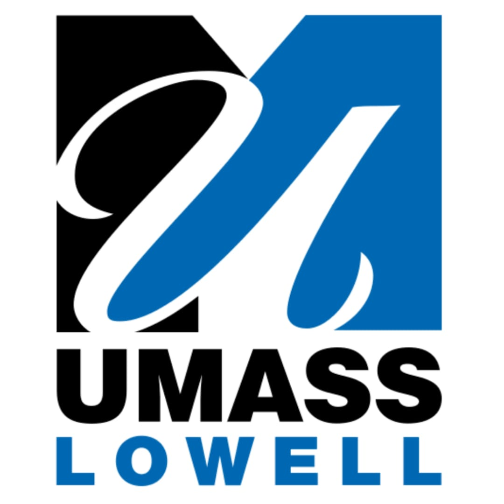
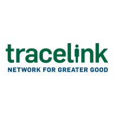
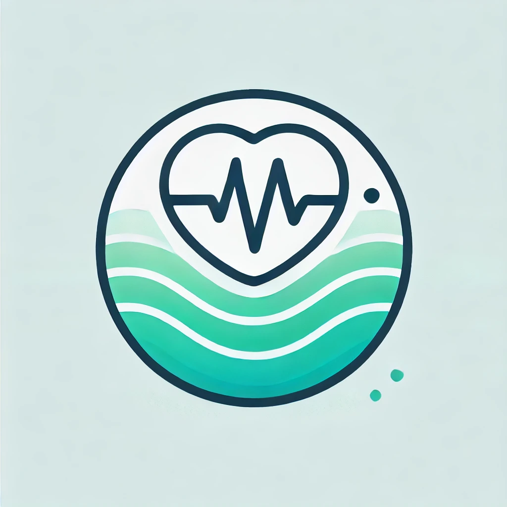

I am Kavya Sree Soma
Hey there!, I am a results-oriented Software Development Engineer with good hands-on experience designing, developing, and deploying scalable web applications, proficient in programming languages from C to Python. I hold a Master’s degree in Computer Science and have strong expertise in Data Structures and Algorithms. My deep understanding of design patterns enables me to design and develop robust applications and efficient automations. I'm passionate about collaborating on innovative solutions that push technological boundaries.
Open to work Immediately -
Discuss Job Opportunities
Open for exciting opportunities like SDE roles
Passionate about writing clean code,system design, tackling complex challenges, learning new
technologies, and making a significant impact.
Experience

Application Developer
University of Massachusetts, Lowell, United States
- Integrating Einstein Copilot into Salesforce to generate concise, AI-driven summaries of student records, allowing academic advisors to quickly access relevant information without manually reviewing multiple records. This solution enhances efficiency and enables advisors to focus more on personalized student support and guidance.
- Designed and developed Apex classes & triggers, unit test classes, and well-engineered flows in Salesforce to meet business requirements.
- Integrated Salesforce with Python, utilizing Salesforce APIs, Improving data interaction across systems.
- Took charge of fixing critical bugs and new feature development, quickly resolving issues and ensuring system reliability.
- Established real-time integration between Salesforce and external web services. This integration facilitated seamless data exchange and ensured up-to-date information was available within Salesforce, improving operational efficiency and enabling real-time insights for key business processes.
Jul 2024 – Present
Application Developer - Student Intern
University of Massachusetts, Lowell, United States
- Worked on the Mosaic Project to develop a 360-degree view of student interactions, improving engagement tracking.
- Used OpenAI APIs to recommend student clubs and activities, enhancing student experience.
- Used Visual studio code, Code builder for metadata management between different environments in Salesforce.
- Automated case management and success team management processes, improving efficiency and response times.
Dec 2022 – May 2024

Software Engineer Intern
TraceLink, Massachusetts, United States
- Improved system performance by optimizing payload information in API calls, reducing API response times for more efficient user interactions.
- Designed REST APIs to support the development of new web features.
- Worked on Performance benchmark for Load test Using IN Query.
- Created Grafana Dashboard for App bundling projection.
- Simplified the payload in admin API endpoint to execute query.
May 2023 – Sep 2023
Software Developer
TCS, Client: National Grid, United Kingdom
- Improved the user registration process by building a web application using JavaScript, HTML, CSS, and the Lightning Web Components (LWC) framework, integrating it with Salesforce to enhance functionality and user experience.
- Performed In-sprint automation, regression testing on complex web pages using Selenium Automation (Java) and achieved 100% coverage. Created automation regression suite to test in different environments reducing manual efforts by 90%.
- Created automation regression suite to test in different environments reducing manual efforts by 90%.
- Followed Agile delivery methodology and used DevOps CI/CD Jenkins deployment pipeline.
Feb 2021 – Aug 2022
Education
University of Massachusetts, Lowell, MA, United States
Masters of Science - MS
Computer Science
GPA: 3.75
- Courseworks: Machine Learning, Internet and Web Systems, Database Systems, Data Structures and Algorithms, Internet of Things, Topics in Computer Science, Data Mining, and Computer Graphics
- Accomplishments: I have developed strong skills in full-stack development, AI-powered tools, and cloud platforms, with experience in using advanced technologies like machine learning, generative AI, and automation. I’ve worked on projects like building AI chatbots, creating medical scribe tools, and developing web applications, focusing on solving real-world problems and improving user experiences. My work reflects a passion for using technology to make processes smarter and more efficient.
Aug 2022 - May 2024
R.V.R & J.C. College Of Engineering, Guntur, India
Bachelors of Science - BS
Computer Engineering
GPA: 3.75 Equivalent
- Courseworks: C, Object-Oriented Programming in C++, Data Structures, JAVA Programming , Operating systems, Computer Networks, Computer Architecture and organization, Database Management Systems, Analysis of Algorithms, Digital Image Processing, Statistics, Calculus, Differential equations, Transformation Techniques, Complex and numerical analysis, Digital Logic design, HDL programming, electronic circuit theories.
- Accomplishments: Organized and led well-attended technical workshops on web development, software design, and cybersecurity for students, with positive feedback. Worked with a team to develop engaging and informative content to share passion for technology.
Jul 2016 - Sep 2020
Skills
Programming Languages
- SQL, Python, Java Script, Type Script, C, C++, Java, HTML, CSS
Web Development
- React, Angular, Spring Boot, Express JS, Node.js, RESTful APIs, MongoDB, Flask, PyQt5
Data Processing
- Pandas, NumPy, Scikit-learn, MySQL
Machine Learning and AI
- Machine Learning, Deep Learning, LLM, Lang Chain, Vector DB, Generative AI, AI Agents
Cloud Platforms
- Salesforce, AWS (EC2, S3, DynamoDB, Cloudwatch, AWS Lambda, VPC, Cloud Formation, Route 53)
Software Practices & Principles
- Algorithms, Object-Oriented Programming, Microservices, Selenium automation
Tools & Methodologies
- Git, Jira, Confluence, Scrum, Agile methodologies, Docker, Kubernetes, Continuous Integration and Deployment, Version Control, Android Studio, Xcode, MATLAB, LabVIEW.
Projects
UML ChatBot - Conversational AI with RAG
Developed an advanced chatbot leveraging Retrieval-Augmented Generation (RAG) techniques to provide accurate and efficient responses to user queries. This project integrated the LangChain library to seamlessly combine retrieval and generation, leveraging MongoDB as a vector database for robust data storage. Data retrieval was efficiently performed through vector search, enabling high-performance and accurate information retrieval. OpenAI APIs were employed to enable sophisticated text generation and natural language understanding, enhancing the chatbot's conversational capabilities. The frontend user experience was designed and developed using Flask in Python Additionally, the chatbot was integrated with the Salesforce API, enabling users to create Salesforce cases directly through the interface, simplifying workflows and improving the customer experience.
June 2024
Med Scribe - AI powered Scribe Tool
Designed and developed a desktop application to process doctor-patient audio conversations and generate highly accurate SOAP notes. Built using Python, the application featured a user-friendly interface developed with the PyQt5 library. The tool utilized OpenAI's Whisper API for advanced speech-to-text conversion, ensuring accurate transcription of conversations. OpenAI APIs were leveraged for SOAP note generation, referencing pre-defined templates to maintain consistency and precision. This solution significantly streamlined the documentation process, saving Doctors time spent on documentation.
May 2024
Shikshana - MERN Stack Application
Developed an end-to-end web application, Shikshana, using the MERN stack (MongoDB, Express.js, React, Node.js) to connect students with tutors. Implemented core functionalities, including user authentication with sign-in and sign-up pages, allowing users to register as students or tutors. Students can view, search, filter, and wishlist tutoring posts, as well as edit their profiles. Tutors also have access to view and edit their profiles. Additionally, designed the entire application using Figma, which includes additional planned features such as enabling students to request appointments with tutors and providing tutors with a dashboard to manage appointments. These functionalities will be implemented soon to make the application production-ready.
Mar 2024
Todo App - Angular Web Application
Developed a full-featured Todo web application using Angular, focusing on a dynamic and responsive user experience. Implemented core functionalities such as task management, user interface design, and efficient data handling. The application includes features to add, search, sort, and filter tasks, enabling users to efficiently organize and prioritize their to-do lists.
Feb 2024

Stress Tracker App - Transformer Model|Android Studio
Developed and trained a transformer-based model for nurse stress prediction using physiological data from the Empatica E4 biosensor. Built an Android application using Android Studio to interface with the Empatica E4 device, process real-time sensor inputs, and apply trained model weights to provide stress-level predictions. The project combines deep learning and mobile application development to support real-time healthcare monitoring and decision-making.
Nov 2024
Travel App - MERN Stack Application
Developed This open-source travel website, inspired by the Airbnb concept, aims to revolutionize the way people travel and explore the world. The platform enhances travel experiences by offering users nearby attractions based on their location, along with unique accommodations and authentic activities. Built using React, ExpressJS, MongoDB, Node.js, and the Bootstrap library, it delivers a seamless and engaging user experience.
Dec 2023
Awards & Certifications
- Salesforce Certified AI Specialist, 2024
- Salesforce Certified Platform Developer I, 2022
- Service virtualization Certification, 2022
- Won first place in the Capstone project among 30+ teams at the University at Massachusetts, for the development of the Travel App, 2023
- Received Star Performer of the month Award in TCS for consistently exceeding expectations and delivering highquality deliverables.
- Secured first place in a coding hackathon during my bachelor's studies at R.V.R. & J.C. College of Engineering.
- Received appreciation for a project showcased at the university-level project expo.
- Certified LabVIEW Associate Developer, 2023
- Introduction to programming in C, NPTEL, 2020.
- Python programming language, NPTEL, 2020.
Download My Resume